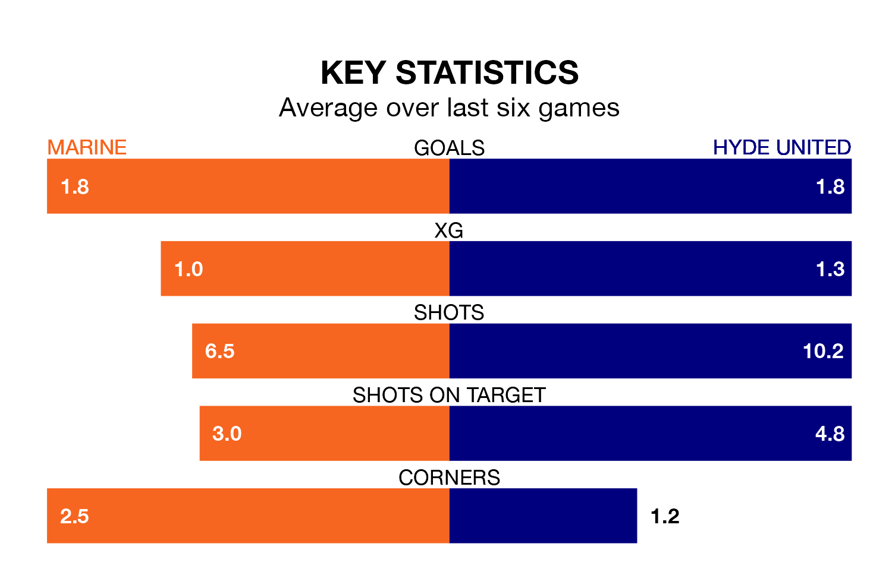

Hyde United face Marine on Saturday seeking to protect their long unbeaten run in Northern Premier League.
Hyde are unbeaten in seven, with two wins and five draws, ahead of the 3pm kick-off.
They face a Marine team who have won three and drawn two over the same number of games.
With 44 goals in 23 games so far this season, Marine are scoring more than average in the league with 1.9 goals per game. And they are conceding fewer than average, letting in 28 goals at a rate of 1.2 per game.
Hyde, meanwhile, are below average scorers, with 1.6 goals per game, compared to a league average of 1.7. They have conceded 1.2 goals per game.
The hosts are sixth in the table after 23 games, of which they have won 11 and drawn six, earning 39 points.
United are one place behind Marine in seventh, with 11 wins and six draws putting them on the same number of points.
In the last five years, Marine and Hyde have played each other on six occasions. Marine won three of them, Hyde two, and they drew once.
On average, Marine scored 1.0 goal and Hyde 1.2 in those matches.
Their last meeting was on September 30, when Marine won 2-0 away.
Marine's last match was on December 30, a 2-1 loss against Basford United.
Hyde drew 2-2 with Ashton United last time out, on Monday.
Updated: 10:36, 03/01/24